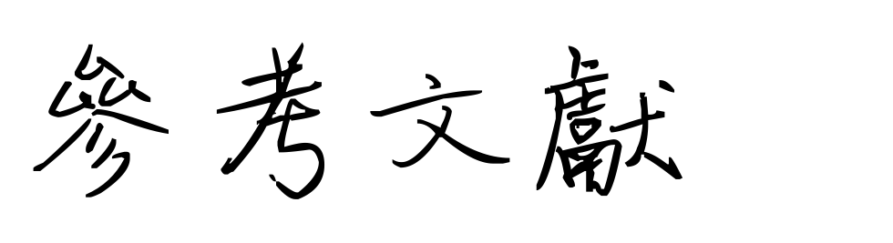

首頁
資料介紹
流程與方法
邊線偵測
羽球軌跡
人體節點
擊球方
擊球點
得分方
球路
成果展示
結論
參考文獻
01. Dataset-Shuttlecock Tajectory Dataset
林育慶、孫念恩、Tsì-Uí İk（無日期）。Shuttlecock Trajectory Dataset。HackMD。2023年07月25日，取自：
https://hackmd.io/Nf8Rh1NrSrqNUzmO0sQKZw
02. Dataset–TracknetV2 Dataset
wywyWang、KuangDW、wwweiwei&tim-forrer（無日期）。CoachAI-Projects。GitHub。2023年07月25日，取自：
https://github.com/wywyWang/CoachAI-Projects
03. 邊線偵測-霍夫轉換
天道酬勤（2019年06月03日）。[邊緣偵測]直線搜查家 - Hough Transform。Medium.。2023年08月20日，取自：
https://medium.com/@bob800530/hough-transform-cf6cb8337eac
04. 邊線偵測-霍夫轉換原理
OpenCV（2024年02月25日）。Hough Line Transform。OpenCV。2023年07月25日，取自：
https://docs.opencv.org/3.4/d9/db0/tutorial_hough_lines.html
05. 邊線偵測-影像遮罩
OXXO.STUDIO（無日期）。影像遮罩。STEAM 教育學習網。2023年08月20日，取自：
https://steam.oxxostudio.tw/category/python/ai/opencv-mask.html
06. 邊線偵測-邊緣偵測
OXXO.STUDIO（無日期）。影像邊緣偵測。STEAM 教育學習網。2023年08月25日，取自：
https://steam.oxxostudio.tw/category/python/ai/opencv-edge-detection.html
07. 邊線偵測-色彩轉換
OXXO.STUDIO（無日期）。影像的色彩轉換。STEAM 教育學習網。2023年08月25日，取自：
https://steam.oxxostudio.tw/category/python/ai/opencv-cvtcolor.html
08. 邊線偵測-HSV
John（2021年5月10日）。Python Opencv 使用 HSV 擷取特定顏色。HackMD。2023年09月20日，取自：
https://hackmd.io/@Johnsonnnn/Syz1nMId_
09. 邊線偵測-透視變換
王祥宇（2020年7月27日）。關於透視變換原理及應用。TPIU。2024年03月03日，取自：
https://www.tpisoftware.com/tpu/articleDetails/1977
10. 邊線偵測-交點
Nick Blog（2021年11月01日）。【python】求两条直线的交点。CSDN。2024年03月03日，取自：
https://blog.csdn.net/xijuezhu8128/article/details/121082445
11. 邊線偵測-幾何變換
OpenCV（無日期）。Geometric Transformations of Images。OpenCV。2024年03月11日，取自：
https://docs.opencv.org/3.0-beta/doc/py_tutorials/py_imgproc/py_geometric_transformations/py_geometric_transformations.html#geometric-transformations
12. 羽球軌跡-ARIMA
Avasla（2022年05月01日）。使用Python建立时间序列(ARIMA、MA、AR)预测模型。CSDN。2023年09月13日，取自：
https://blog.csdn.net/WHYbeHERE/article/details/109277597
13. 羽球軌跡-TracknetV2
Chang-Chia-Chi（2020年12月22日）。TrackNet-Badminton-Tracking-tensorflow2。GitHub。2023年08月11日，取自：
https://github.com/Chang-Chia-Chi/TrackNet-Badminton-Tracking-tensorflow2
14. 羽球軌跡-軌跡平滑
Dangkie（2016年11月23日）。轨迹平滑方法。CSDN。2023年09月20日，取自：
https://blog.csdn.net/Dangkie/article/details/53311516
15. 人體節點-25關節
菜菜周（2020年04月02日）。OpenPose的18和25关节点对应顺序。CSDN。2023年07月25日，取自：
https://blog.csdn.net/ssyy5233225/article/details/105265488
16. 人體節點-OpenPose
MatthijsBurgh（無日期）。openpose。GitHub。2023年07月25日，取自：
https://github.com/CMU-Perceptual-Computing-Lab/openpose
17. 球路-角度
AI视觉网奇（2023年03月04日）。python 点计算角度。CSDN。2024年01月16日，取自：
https://blog.csdn.net/jacke121/article/details/112676308
18. 球路-軌跡分析
邱靖華、李素箱、簡英智（2001年10月）：〈羽球之飛行軌跡分析〉。《興大體育》，第五期：67-76。2024 年 01 月 16 日，取自：
https://ir.lib.nchu.edu.tw/bitstream/11455/72999/1/142872-4.pdf
19. 網頁-模板
TemplatesJungle（無日期）。WingTea – Tea Shop Free Bootstrap 5 HTML Website Template。TemplatesJungle。2024年01月13日，取自：
https://templatesjungle.com/downloads/wingtea-tea-shop-free-bootstrap-website-template/
20. 網頁-標題欄圖示
寻图网（無日期）。羽毛球器材。寻图网。2024年01月13日，取自：
https://icon.52112.com/icon/50707.html
21. 網頁-載入圖示
LovePik（無日期）。單色 PNG圖案素材。LovePik。2024年01月15日，取自：
https://zh.lovepik.com/images/png-the-monochrome.html
22. 網頁-摘要圖片
Ndyk（無日期）。Badminton。Pinterest。2024年02月02日，取自：
https://www.pinterest.com/pin/57209857758302000/
23. 網頁-研究動機與目標圖片
Vhic Emz_（無日期）。Badminton。Pinterest。2024年02月02日，取自：
https://www.pinterest.com/pin/5629568277501560/
24. 網頁-首頁背景圖
Leo Zhao（無日期）。Badminton。Pexels。2024年03月06日，取自：
https://www.pexels.com/zh-tw/photo/5767580/
25. 網頁-英文LOGO
crazy-photoshop。Badminton的英文涂鸦字母字型写法范例，涂鸦字母字型特效转换。QT86。2024年03月06日，取自：
https://www.crazy-photoshop.com/name/english/graffiti-letters-font/?fontname=Badminton
26. 網頁-中文LOGO
QT86（無日期）。繁体字体转换器控制台。QT86。2024年03月14日，取自：
https://www.77623.com/fanti.php